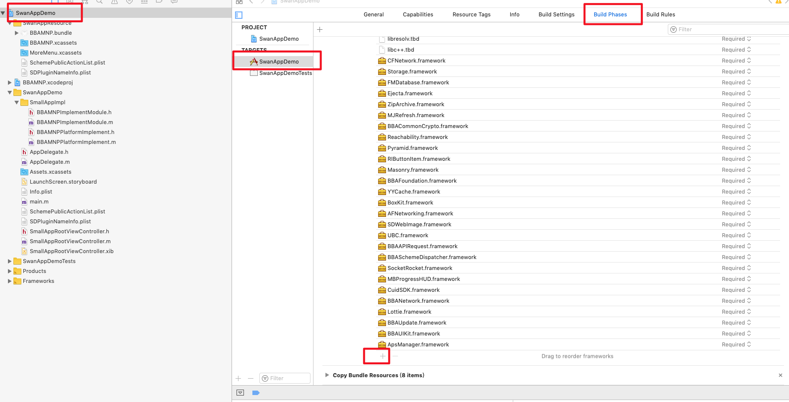

<!DOCTYPE HTML>
<html lang="" >
    <head>
        <meta charset="UTF-8">
        <meta content="text/html; charset=utf-8" http-equiv="Content-Type">
        <title>百度内部接入 · 我的标题</title>
        <meta http-equiv="X-UA-Compatible" content="IE=edge" />
        <meta name="description" content="">
        <meta name="generator" content="GitBook 3.2.3">
        
        
        
    
    <link rel="stylesheet" href="../../../gitbook/style.css">

    
            
                
                <link rel="stylesheet" href="../../../gitbook/gitbook-plugin-highlight/website.css">
                
            
                
                <link rel="stylesheet" href="../../../gitbook/gitbook-plugin-search/search.css">
                
            
                
                <link rel="stylesheet" href="../../../gitbook/gitbook-plugin-fontsettings/website.css">
                
            
        

    

    
        
    

        
    
    
    <meta name="HandheldFriendly" content="true"/>
    <meta name="viewport" content="width=device-width, initial-scale=1, user-scalable=no">
    <meta name="apple-mobile-web-app-capable" content="yes">
    <meta name="apple-mobile-web-app-status-bar-style" content="black">
    <link rel="apple-touch-icon-precomposed" sizes="152x152" href="../../../gitbook/images/apple-touch-icon-precomposed-152.png">
    <link rel="shortcut icon" href="../../../gitbook/images/favicon.ico" type="image/x-icon">

    
    <link rel="next" href="百度内部接入-公参.html" />
    
    
    <link rel="prev" href="./" />
    

    </head>
    <body>
        
<div class="book">
    <div class="book-summary">
        
            
<div id="book-search-input" role="search">
    <input type="text" placeholder="Type to search" />
</div>

            
                <nav role="navigation">
                


<ul class="summary">
    
    

    

    
        
        
    
        <li class="chapter " data-level="1.1" data-path="../../../">
            
                <a href="../../../">
            
                    
                    介绍
            
                </a>
            

            
        </li>
    
        <li class="chapter " data-level="1.2" >
            
                <span>
            
                    
                    规范说明
            
                </span>
            

            
            <ul class="articles">
                
    
        <li class="chapter " data-level="1.2.1" data-path="../../../规范说明/UA规则.html">
            
                <a href="../../../规范说明/UA规则.html">
            
                    
                    UA 规则
            
                </a>
            

            
        </li>
    
        <li class="chapter " data-level="1.2.2" data-path="../../../规范说明/调起协议.html">
            
                <a href="../../../规范说明/调起协议.html">
            
                    
                    调起协议
            
                </a>
            

            
        </li>
    
        <li class="chapter " data-level="1.2.3" data-path="../../../规范说明/分享.html">
            
                <a href="../../../规范说明/分享.html">
            
                    
                    分享
            
                </a>
            

            
        </li>
    

            </ul>
            
        </li>
    
        <li class="chapter " data-level="1.3" >
            
                <span>
            
                    
                    客户端 swan-native 接入
            
                </span>
            

            
            <ul class="articles">
                
    
        <li class="chapter " data-level="1.3.1" >
            
                <span>
            
                    
                    Android
            
                </span>
            

            
            <ul class="articles">
                
    
        <li class="chapter " data-level="1.3.1.1" >
            
                <span>
            
                    
                    简介
            
                </span>
            

            
            <ul class="articles">
                
    
        <li class="chapter " data-level="1.3.1.1.1" data-path="../../Android/名词解释.html">
            
                <a href="../../Android/名词解释.html">
            
                    
                    名词解释
            
                </a>
            

            
        </li>
    
        <li class="chapter " data-level="1.3.1.1.2" data-path="../../Android/小程序Lib说明.html">
            
                <a href="../../Android/小程序Lib说明.html">
            
                    
                    小程序 Lib 说明
            
                </a>
            

            
        </li>
    
        <li class="chapter " data-level="1.3.1.1.3" data-path="../../Android/第三方依赖库说明.html">
            
                <a href="../../Android/第三方依赖库说明.html">
            
                    
                    第三方依赖库说明
            
                </a>
            

            
        </li>
    
        <li class="chapter " data-level="1.3.1.1.4" data-path="../../Android/需要接入方实现的功能/接口说明.html">
            
                <a href="../../Android/需要接入方实现的功能/接口说明.html">
            
                    
                    必选功能、可选功能说明
            
                </a>
            

            
        </li>
    

            </ul>
            
        </li>
    
        <li class="chapter " data-level="1.3.1.2" >
            
                <span>
            
                    
                    接入步骤说明
            
                </span>
            

            
            <ul class="articles">
                
    
        <li class="chapter " data-level="1.3.1.2.1" data-path="../../Android/接入步骤说明/外部宿主接入.html">
            
                <a href="../../Android/接入步骤说明/外部宿主接入.html">
            
                    
                    外部宿主接入
            
                </a>
            

            
        </li>
    
        <li class="chapter " data-level="1.3.1.2.2" data-path="../../Android/接入步骤说明/百度内部接入.html">
            
                <a href="../../Android/接入步骤说明/百度内部接入.html">
            
                    
                    百度内部接入
            
                </a>
            

            
        </li>
    

            </ul>
            
        </li>
    
        <li class="chapter " data-level="1.3.1.3" >
            
                <span>
            
                    
                    需要接入方实现的功能
            
                </span>
            

            
            <ul class="articles">
                
    
        <li class="chapter " data-level="1.3.1.3.1" data-path="../../Android/需要接入方实现的功能/支付.html">
            
                <a href="../../Android/需要接入方实现的功能/支付.html">
            
                    
                    支付
            
                </a>
            

            
        </li>
    
        <li class="chapter " data-level="1.3.1.3.2" data-path="../../Android/需要接入方实现的功能/二维码扫描.html">
            
                <a href="../../Android/需要接入方实现的功能/二维码扫描.html">
            
                    
                    二维码扫描
            
                </a>
            

            
        </li>
    
        <li class="chapter " data-level="1.3.1.3.3" data-path="../../Android/需要接入方实现的功能/位置.html">
            
                <a href="../../Android/需要接入方实现的功能/位置.html">
            
                    
                    位置
            
                </a>
            

            
        </li>
    
        <li class="chapter " data-level="1.3.1.3.4" data-path="../../Android/需要接入方实现的功能/分享.html">
            
                <a href="../../Android/需要接入方实现的功能/分享.html">
            
                    
                    分享
            
                </a>
            

            
        </li>
    
        <li class="chapter " data-level="1.3.1.3.5" data-path="../../Android/需要接入方实现的功能/图片.html">
            
                <a href="../../Android/需要接入方实现的功能/图片.html">
            
                    
                    图片
            
                </a>
            

            
        </li>
    
        <li class="chapter " data-level="1.3.1.3.6" data-path="../../Android/需要接入方实现的功能/地图.html">
            
                <a href="../../Android/需要接入方实现的功能/地图.html">
            
                    
                    地图
            
                </a>
            

            
        </li>
    
        <li class="chapter " data-level="1.3.1.3.7" data-path="../../Android/需要接入方实现的功能/地址、发票.html">
            
                <a href="../../Android/需要接入方实现的功能/地址、发票.html">
            
                    
                    地址、发票
            
                </a>
            

            
        </li>
    
        <li class="chapter " data-level="1.3.1.3.8" data-path="../../Android/需要接入方实现的功能/夜间模式.html">
            
                <a href="../../Android/需要接入方实现的功能/夜间模式.html">
            
                    
                    夜间模式
            
                </a>
            

            
        </li>
    
        <li class="chapter " data-level="1.3.1.3.9" data-path="../../Android/需要接入方实现的功能/小程序配置.html">
            
                <a href="../../Android/需要接入方实现的功能/小程序配置.html">
            
                    
                    配置文件
            
                </a>
            

            
        </li>
    
        <li class="chapter " data-level="1.3.1.3.10" data-path="../../Android/需要接入方实现的功能/开放接口授权相关接入文档.html">
            
                <a href="../../Android/需要接入方实现的功能/开放接口授权相关接入文档.html">
            
                    
                    开放接口授权相关接入文档
            
                </a>
            

            
        </li>
    
        <li class="chapter " data-level="1.3.1.3.11" data-path="../../Android/需要接入方实现的功能/打开文档.html">
            
                <a href="../../Android/需要接入方实现的功能/打开文档.html">
            
                    
                    打开指定类型文档
            
                </a>
            

            
        </li>
    
        <li class="chapter " data-level="1.3.1.3.12" data-path="../../Android/需要接入方实现的功能/开源统计.html">
            
                <a href="../../Android/需要接入方实现的功能/开源统计.html">
            
                    
                    数据统计
            
                </a>
            

            
        </li>
    
        <li class="chapter " data-level="1.3.1.3.13" data-path="../../Android/需要接入方实现的功能/用户反馈.html">
            
                <a href="../../Android/需要接入方实现的功能/用户反馈.html">
            
                    
                    用户反馈
            
                </a>
            

            
        </li>
    
        <li class="chapter " data-level="1.3.1.3.14" data-path="../../Android/需要接入方实现的功能/拓展API.html">
            
                <a href="../../Android/需要接入方实现的功能/拓展API.html">
            
                    
                    拓展宿主功能API
            
                </a>
            

            
        </li>
    
        <li class="chapter " data-level="1.3.1.3.15" data-path="../../Android/需要接入方实现的功能/登录.html">
            
                <a href="../../Android/需要接入方实现的功能/登录.html">
            
                    
                    登录
            
                </a>
            

            
        </li>
    
        <li class="chapter " data-level="1.3.1.3.16" data-path="../../Android/需要接入方实现的功能/直播.html">
            
                <a href="../../Android/需要接入方实现的功能/直播.html">
            
                    
                    直播
            
                </a>
            

            
        </li>
    
        <li class="chapter " data-level="1.3.1.3.17" data-path="../../Android/需要接入方实现的功能/端能力回调说明.html">
            
                <a href="../../Android/需要接入方实现的功能/端能力回调说明.html">
            
                    
                    端能力回调说明
            
                </a>
            

            
        </li>
    
        <li class="chapter " data-level="1.3.1.3.18" data-path="../../Android/需要接入方实现的功能/背景音乐.html">
            
                <a href="../../Android/需要接入方实现的功能/背景音乐.html">
            
                    
                    背景音乐
            
                </a>
            

            
        </li>
    
        <li class="chapter " data-level="1.3.1.3.19" data-path="../../Android/需要接入方实现的功能/视频.html">
            
                <a href="../../Android/需要接入方实现的功能/视频.html">
            
                    
                    视频
            
                </a>
            

            
        </li>
    
        <li class="chapter " data-level="1.3.1.3.20" data-path="../../Android/需要接入方实现的功能/选择视频-压缩.html">
            
                <a href="../../Android/需要接入方实现的功能/选择视频-压缩.html">
            
                    
                    选择视频-压缩能力
            
                </a>
            

            
        </li>
    
        <li class="chapter " data-level="1.3.1.3.21" data-path="../../Android/需要接入方实现的功能/背景音乐.html">
            
                <a href="../../Android/需要接入方实现的功能/背景音乐.html">
            
                    
                    背景音乐
            
                </a>
            

            
        </li>
    
        <li class="chapter " data-level="1.3.1.3.22" data-path="../../Android/需要接入方实现的功能/消息推送ID.html">
            
                <a href="../../Android/需要接入方实现的功能/消息推送ID.html">
            
                    
                    消息推送
            
                </a>
            

            
        </li>
    

            </ul>
            
        </li>
    
        <li class="chapter " data-level="1.3.1.4" >
            
                <span>
            
                    
                    需要接入方实现的服务
            
                </span>
            

            
            <ul class="articles">
                
    
        <li class="chapter " data-level="1.3.1.4.1" data-path="../../Android/需要接入方实现的服务/授权.md">
            
                <span>
            
                    
                    授权
            
                </a>
            

            
        </li>
    
        <li class="chapter " data-level="1.3.1.4.2" data-path="../../Android/需要接入方实现的服务/登录.md">
            
                <span>
            
                    
                    登录
            
                </a>
            

            
        </li>
    

            </ul>
            
        </li>
    

            </ul>
            
        </li>
    
        <li class="chapter " data-level="1.3.2" data-path="../">
            
                <a href="../">
            
                    
                    iOS
            
                </a>
            

            
            <ul class="articles">
                
    
        <li class="chapter " data-level="1.3.2.1" data-path="../简介/">
            
                <a href="../简介/">
            
                    
                    简介
            
                </a>
            

            
            <ul class="articles">
                
    
        <li class="chapter " data-level="1.3.2.1.1" data-path="../简介/名词解释.html">
            
                <a href="../简介/名词解释.html">
            
                    
                    名词解释
            
                </a>
            

            
        </li>
    
        <li class="chapter " data-level="1.3.2.1.2" data-path="../简介/小程序依赖三方库.html">
            
                <a href="../简介/小程序依赖三方库.html">
            
                    
                    小程序依赖三方库
            
                </a>
            

            
        </li>
    
        <li class="chapter " data-level="1.3.2.1.3" data-path="../简介/小程序库大小统计.html">
            
                <a href="../简介/小程序库大小统计.html">
            
                    
                    小程序库大小统计
            
                </a>
            

            
        </li>
    
        <li class="chapter " data-level="1.3.2.1.4" data-path="../简介/小程序开源框架.md">
            
                <span>
            
                    
                    小程序开源框架
            
                </a>
            

            
        </li>
    
        <li class="chapter " data-level="1.3.2.1.5" data-path="../简介/小程序运行时架构设计.md">
            
                <span>
            
                    
                    小程序运行时架构设计
            
                </a>
            

            
        </li>
    
        <li class="chapter " data-level="1.3.2.1.6" data-path="../简介/小程序页面栈设计.html">
            
                <a href="../简介/小程序页面栈设计.html">
            
                    
                    小程序页面栈设计
            
                </a>
            

            
        </li>
    
        <li class="chapter " data-level="1.3.2.1.7" data-path="../需要接入方实现的功能/adpater层接口实现说明.html">
            
                <a href="../需要接入方实现的功能/adpater层接口实现说明.html">
            
                    
                    功能接口实现说明、必要功能列表
            
                </a>
            

            
        </li>
    

            </ul>
            
        </li>
    
        <li class="chapter " data-level="1.3.2.2" data-path="./">
            
                <a href="./">
            
                    
                    接入步骤说明
            
                </a>
            

            
            <ul class="articles">
                
    
        <li class="chapter active" data-level="1.3.2.2.1" data-path="百度内部接入.html">
            
                <a href="百度内部接入.html">
            
                    
                    百度内部接入
            
                </a>
            

            
        </li>
    
        <li class="chapter " data-level="1.3.2.2.2" data-path="百度内部接入-公参.html">
            
                <a href="百度内部接入-公参.html">
            
                    
                    百度内部接入-公参
            
                </a>
            

            
        </li>
    
        <li class="chapter " data-level="1.3.2.2.3" data-path="百度外部接入.html">
            
                <a href="百度外部接入.html">
            
                    
                    百度外部接入
            
                </a>
            

            
        </li>
    
        <li class="chapter " data-level="1.3.2.2.4" data-path="端能力扩展.html">
            
                <a href="端能力扩展.html">
            
                    
                    端能力扩展
            
                </a>
            

            
        </li>
    

            </ul>
            
        </li>
    
        <li class="chapter " data-level="1.3.2.3" data-path="../小程序框架提供给宿主的API/">
            
                <a href="../小程序框架提供给宿主的API/">
            
                    
                    小程序框架提供给宿主的API
            
                </a>
            

            
            <ul class="articles">
                
    
        <li class="chapter " data-level="1.3.2.3.1" data-path="../小程序框架提供给宿主的API/SWANAuthorizeProtocol.html">
            
                <a href="../小程序框架提供给宿主的API/SWANAuthorizeProtocol.html">
            
                    
                    SWAN Authorize Protocol
            
                </a>
            

            
        </li>
    
        <li class="chapter " data-level="1.3.2.3.2" data-path="../小程序框架提供给宿主的API/SWANComponentTouchUtilProtocol.html">
            
                <a href="../小程序框架提供给宿主的API/SWANComponentTouchUtilProtocol.html">
            
                    
                    SWAN Component Touch Util Protocol
            
                </a>
            

            
        </li>
    
        <li class="chapter " data-level="1.3.2.3.3" data-path="../小程序框架提供给宿主的API/SWANDialogProtocol.html">
            
                <a href="../小程序框架提供给宿主的API/SWANDialogProtocol.html">
            
                    
                    SWAN Dialog Protocol
            
                </a>
            

            
        </li>
    
        <li class="chapter " data-level="1.3.2.3.4" data-path="../小程序框架提供给宿主的API/SWANMesViewDialogProtocol.html">
            
                <a href="../小程序框架提供给宿主的API/SWANMesViewDialogProtocol.html">
            
                    
                    SWAN Mes View Dialog Protocol
            
                </a>
            

            
        </li>
    
        <li class="chapter " data-level="1.3.2.3.5" data-path="../小程序框架提供给宿主的API/SWANServiceProtocol.html">
            
                <a href="../小程序框架提供给宿主的API/SWANServiceProtocol.html">
            
                    
                    SWAN Service Protocol
            
                </a>
            

            
        </li>
    
        <li class="chapter " data-level="1.3.2.3.6" data-path="../小程序框架提供给宿主的API/SWANSubDirectoryManagerProtocol.html">
            
                <a href="../小程序框架提供给宿主的API/SWANSubDirectoryManagerProtocol.html">
            
                    
                    SWAN Sub Directory Manager Protocol
            
                </a>
            

            
        </li>
    
        <li class="chapter " data-level="1.3.2.3.7" data-path="../小程序框架提供给宿主的API/SWANUIPluginUtilProtocol.html">
            
                <a href="../小程序框架提供给宿主的API/SWANUIPluginUtilProtocol.html">
            
                    
                    SWANUI Plugin Util Protocol
            
                </a>
            

            
        </li>
    
        <li class="chapter " data-level="1.3.2.3.8" data-path="../小程序框架提供给宿主的API/SWANUtilitiesProtocol.html">
            
                <a href="../小程序框架提供给宿主的API/SWANUtilitiesProtocol.html">
            
                    
                    SWAN Utilities Protocol
            
                </a>
            

            
        </li>
    
        <li class="chapter " data-level="1.3.2.3.9" data-path="../小程序框架提供给宿主的API/SWANWebViewNavigationProtocol.html">
            
                <a href="../小程序框架提供给宿主的API/SWANWebViewNavigationProtocol.html">
            
                    
                    SWAN Web View Navigation Protocol
            
                </a>
            

            
        </li>
    
        <li class="chapter " data-level="1.3.2.3.10" data-path="../小程序框架提供给宿主的API/打点统计.html">
            
                <a href="../小程序框架提供给宿主的API/打点统计.html">
            
                    
                    打点统计
            
                </a>
            

            
        </li>
    
        <li class="chapter " data-level="1.3.2.3.11" data-path="../小程序框架提供给宿主的API/生命周期.html">
            
                <a href="../小程序框架提供给宿主的API/生命周期.html">
            
                    
                    生命周期
            
                </a>
            

            
        </li>
    
        <li class="chapter " data-level="1.3.2.3.12" data-path="../小程序框架提供给宿主的API/预加载.html">
            
                <a href="../小程序框架提供给宿主的API/预加载.html">
            
                    
                    预加载
            
                </a>
            

            
        </li>
    

            </ul>
            
        </li>
    
        <li class="chapter " data-level="1.3.2.4" data-path="../需要接入方实现的功能/">
            
                <a href="../需要接入方实现的功能/">
            
                    
                    需要接入方实现的功能
            
                </a>
            

            
            <ul class="articles">
                
    
        <li class="chapter " data-level="1.3.2.4.1" data-path="../需要接入方实现的功能/ConfigOption.html">
            
                <a href="../需要接入方实现的功能/ConfigOption.html">
            
                    
                    Config Option
            
                </a>
            

            
        </li>
    
        <li class="chapter " data-level="1.3.2.4.2" data-path="../需要接入方实现的功能/Form.html">
            
                <a href="../需要接入方实现的功能/Form.html">
            
                    
                    Form
            
                </a>
            

            
        </li>
    
        <li class="chapter " data-level="1.3.2.4.3" data-path="../需要接入方实现的功能/Platform.html">
            
                <a href="../需要接入方实现的功能/Platform.html">
            
                    
                    Platform
            
                </a>
            

            
        </li>
    
        <li class="chapter " data-level="1.3.2.4.4" data-path="../需要接入方实现的功能/UI.html">
            
                <a href="../需要接入方实现的功能/UI.html">
            
                    
                    UI
            
                </a>
            

            
        </li>
    
        <li class="chapter " data-level="1.3.2.4.5" data-path="../需要接入方实现的功能/webview生命周期.html">
            
                <a href="../需要接入方实现的功能/webview生命周期.html">
            
                    
                    webview生命周期
            
                </a>
            

            
        </li>
    
        <li class="chapter " data-level="1.3.2.4.6" data-path="../需要接入方实现的功能/二维码扫描.html">
            
                <a href="../需要接入方实现的功能/二维码扫描.html">
            
                    
                    二维码扫描
            
                </a>
            

            
        </li>
    
        <li class="chapter " data-level="1.3.2.4.7" data-path="../需要接入方实现的功能/分享.html">
            
                <a href="../需要接入方实现的功能/分享.html">
            
                    
                    分享
            
                </a>
            

            
        </li>
    
        <li class="chapter " data-level="1.3.2.4.8" data-path="../需要接入方实现的功能/反馈.html">
            
                <a href="../需要接入方实现的功能/反馈.html">
            
                    
                    反馈
            
                </a>
            

            
        </li>
    
        <li class="chapter " data-level="1.3.2.4.9" data-path="../需要接入方实现的功能/图片.html">
            
                <a href="../需要接入方实现的功能/图片.html">
            
                    
                    图片
            
                </a>
            

            
        </li>
    
        <li class="chapter " data-level="1.3.2.4.10" data-path="../需要接入方实现的功能/地图.html">
            
                <a href="../需要接入方实现的功能/地图.html">
            
                    
                    地图
            
                </a>
            

            
        </li>
    
        <li class="chapter " data-level="1.3.2.4.11" data-path="../需要接入方实现的功能/地址、发票.html">
            
                <a href="../需要接入方实现的功能/地址、发票.html">
            
                    
                    地址、发票
            
                </a>
            

            
        </li>
    
        <li class="chapter " data-level="1.3.2.4.12" data-path="../需要接入方实现的功能/夜间模式.html">
            
                <a href="../需要接入方实现的功能/夜间模式.html">
            
                    
                    夜间模式
            
                </a>
            

            
        </li>
    
        <li class="chapter " data-level="1.3.2.4.13" data-path="../需要接入方实现的功能/定位.html">
            
                <a href="../需要接入方实现的功能/定位.html">
            
                    
                    定位
            
                </a>
            

            
        </li>
    
        <li class="chapter " data-level="1.3.2.4.14" data-path="../需要接入方实现的功能/导航.html">
            
                <a href="../需要接入方实现的功能/导航.html">
            
                    
                    导航
            
                </a>
            

            
        </li>
    
        <li class="chapter " data-level="1.3.2.4.15" data-path="../需要接入方实现的功能/授权.html">
            
                <a href="../需要接入方实现的功能/授权.html">
            
                    
                    授权
            
                </a>
            

            
        </li>
    
        <li class="chapter " data-level="1.3.2.4.16" data-path="../需要接入方实现的功能/支付.html">
            
                <a href="../需要接入方实现的功能/支付.html">
            
                    
                    支付
            
                </a>
            

            
        </li>
    
        <li class="chapter " data-level="1.3.2.4.17" data-path="../需要接入方实现的功能/直播.html">
            
                <a href="../需要接入方实现的功能/直播.html">
            
                    
                    直播
            
                </a>
            

            
        </li>
    
        <li class="chapter " data-level="1.3.2.4.18" data-path="../需要接入方实现的功能/视频.html">
            
                <a href="../需要接入方实现的功能/视频.html">
            
                    
                    视频
            
                </a>
            

            
        </li>
    
        <li class="chapter " data-level="1.3.2.4.19" data-path="../需要接入方实现的功能/端能力回调说明.html">
            
                <a href="../需要接入方实现的功能/端能力回调说明.html">
            
                    
                    端能力回调说明
            
                </a>
            

            
        </li>
    
        <li class="chapter " data-level="1.3.2.4.20" data-path="../需要接入方实现的功能/账号.html">
            
                <a href="../需要接入方实现的功能/账号.html">
            
                    
                    账号
            
                </a>
            

            
        </li>
    

            </ul>
            
        </li>
    
        <li class="chapter " data-level="1.3.2.5" data-path="../需要接入方实现的服务/">
            
                <a href="../需要接入方实现的服务/">
            
                    
                    需要接入方实现的服务
            
                </a>
            

            
            <ul class="articles">
                
    
        <li class="chapter " data-level="1.3.2.5.1" data-path="../需要接入方实现的服务/formid.html">
            
                <a href="../需要接入方实现的服务/formid.html">
            
                    
                    Formid
            
                </a>
            

            
        </li>
    
        <li class="chapter " data-level="1.3.2.5.2" data-path="../需要接入方实现的服务/发票.html">
            
                <a href="../需要接入方实现的服务/发票.html">
            
                    
                    发票
            
                </a>
            

            
        </li>
    
        <li class="chapter " data-level="1.3.2.5.3" data-path="../需要接入方实现的服务/授权.html">
            
                <a href="../需要接入方实现的服务/授权.html">
            
                    
                    授权
            
                </a>
            

            
        </li>
    
        <li class="chapter " data-level="1.3.2.5.4" data-path="../需要接入方实现的服务/收货地址.html">
            
                <a href="../需要接入方实现的服务/收货地址.html">
            
                    
                    收货地址
            
                </a>
            

            
        </li>
    

            </ul>
            
        </li>
    

            </ul>
            
        </li>
    

            </ul>
            
        </li>
    
        <li class="chapter " data-level="1.4" >
            
                <span>
            
                    
                    前端 swan.js 接入
            
                </span>
            

            
            <ul class="articles">
                
    
        <li class="chapter " data-level="1.4.1" data-path="../../../前端swan.js接入/如何进行扩展.html">
            
                <a href="../../../前端swan.js接入/如何进行扩展.html">
            
                    
                    extension扩展
            
                </a>
            

            
        </li>
    
        <li class="chapter " data-level="1.4.2" data-path="../../../前端swan.js接入/下发与加载机制.html">
            
                <a href="../../../前端swan.js接入/下发与加载机制.html">
            
                    
                    下发与加载机制
            
                </a>
            

            
        </li>
    
        <li class="chapter " data-level="1.4.3" data-path="../../../前端swan.js接入/统计事件list.html">
            
                <a href="../../../前端swan.js接入/统计事件list.html">
            
                    
                    统计事件 list
            
                </a>
            

            
        </li>
    
        <li class="chapter " data-level="1.4.4" data-path="../../../前端swan.js接入/Demo.html">
            
                <a href="../../../前端swan.js接入/Demo.html">
            
                    
                    Demo
            
                </a>
            

            
        </li>
    

            </ul>
            
        </li>
    
        <li class="chapter " data-level="1.5" >
            
                <span>
            
                    
                    开发者工具接入
            
                </span>
            

            
            <ul class="articles">
                
    
        <li class="chapter " data-level="1.5.1" data-path="../../../开发者工具相关/">
            
                <a href="../../../开发者工具相关/">
            
                    
                    开发者工具宿主接入步骤
            
                </a>
            

            
        </li>
    
        <li class="chapter " data-level="1.5.2" data-path="../../../开发者工具相关/增加宿主配置.html">
            
                <a href="../../../开发者工具相关/增加宿主配置.html">
            
                    
                    增加宿主配置
            
                </a>
            

            
        </li>
    
        <li class="chapter " data-level="1.5.3" data-path="../../../开发者工具相关/开发和调试.html">
            
                <a href="../../../开发者工具相关/开发和调试.html">
            
                    
                    开发和调试
            
                </a>
            

            
        </li>
    
        <li class="chapter " data-level="1.5.4" data-path="../../../开发者工具相关/开发配置插件.md">
            
                <span>
            
                    
                    开发配置插件
            
                </a>
            

            
        </li>
    
        <li class="chapter " data-level="1.5.5" data-path="../../../开发者工具相关/扩展api和组件.md">
            
                <span>
            
                    
                    扩展api和组件
            
                </a>
            

            
        </li>
    
        <li class="chapter " data-level="1.5.6" data-path="../../../开发者工具相关/模拟器插件.md">
            
                <span>
            
                    
                    模拟器插件
            
                </a>
            

            
        </li>
    

            </ul>
            
        </li>
    
        <li class="chapter " data-level="1.6" >
            
                <span>
            
                    
                    server 端接入
            
                </span>
            

            
            <ul class="articles">
                
    
        <li class="chapter " data-level="1.6.1" data-path="../../../server端接入/">
            
                <a href="../../../server端接入/">
            
                    
                    宿主方需要实现的server端接口
            
                </a>
            

            
        </li>
    
        <li class="chapter " data-level="1.6.2" data-path="../../../server端接入/advices_for_implement.html">
            
                <a href="../../../server端接入/advices_for_implement.html">
            
                    
                    外部接入方服务端实现建议
            
                </a>
            

            
        </li>
    
        <li class="chapter " data-level="1.6.3" data-path="../../../server端接入/steps_to_register.html">
            
                <a href="../../../server端接入/steps_to_register.html">
            
                    
                    内部接入方接入流程
            
                </a>
            

            
        </li>
    
        <li class="chapter " data-level="1.6.4" data-path="../../../server端接入/百度智能小程序开源接入方案.html">
            
                <a href="../../../server端接入/百度智能小程序开源接入方案.html">
            
                    
                    百度智能小程序开源接入方案功能
            
                </a>
            

            
        </li>
    
        <li class="chapter " data-level="1.6.5" >
            
                <span>
            
                    
                    外部接入方服务端细节指导
            
                </span>
            

            
            <ul class="articles">
                
    
        <li class="chapter " data-level="1.6.5.1" data-path="../../../server端接入/细节指导/oauth实现.html">
            
                <a href="../../../server端接入/细节指导/oauth实现.html">
            
                    
                    oauth实现
            
                </a>
            

            
        </li>
    
        <li class="chapter " data-level="1.6.5.2" data-path="../../../server端接入/细节指导/swanid机制说明.html">
            
                <a href="../../../server端接入/细节指导/swanid机制说明.html">
            
                    
                    swanid机制说明
            
                </a>
            

            
        </li>
    
        <li class="chapter " data-level="1.6.5.3" data-path="../../../server端接入/细节指导/宿主服务端接口统计.html">
            
                <a href="../../../server端接入/细节指导/宿主服务端接口统计.html">
            
                    
                    宿主服务端接口统计
            
                </a>
            

            
        </li>
    
        <li class="chapter " data-level="1.6.5.4" data-path="../../../server端接入/细节指导/授权指导.html">
            
                <a href="../../../server端接入/细节指导/授权指导.html">
            
                    
                    授权指导
            
                </a>
            

            
        </li>
    

            </ul>
            
        </li>
    

            </ul>
            
        </li>
    
        <li class="chapter " data-level="1.7" data-path="../../../CTS测试/">
            
                <a href="../../../CTS测试/">
            
                    
                    CTS 测试
            
                </a>
            

            
        </li>
    

    

    <li class="divider"></li>

    <li>
        <a href="https://www.gitbook.com" target="blank" class="gitbook-link">
            Published with GitBook
        </a>
    </li>
</ul>


                </nav>
            
        
    </div>

    <div class="book-body">
        
            <div class="body-inner">
                
                    

<div class="book-header" role="navigation">
    

    <!-- Title -->
    <h1>
        <i class="fa fa-circle-o-notch fa-spin"></i>
        <a href="../../.." >百度内部接入</a>
    </h1>
</div>


                    <div class="page-wrapper" tabindex="-1" role="main">
                        <div class="page-inner">
                            
<div id="book-search-results">
    <div class="search-noresults">
    
                                <section class="normal markdown-section">
                                
                                <!-- TOC -->
<ul>
<li><a href="#1-&#x767E;&#x5EA6;&#x5185;&#x90E8;&#x63A5;&#x5165;">1. &#x767E;&#x5EA6;&#x5185;&#x90E8;&#x63A5;&#x5165;</a><ul>
<li><a href="#11-&#x6587;&#x6863;&#x7248;&#x672C;">1.1. &#x6587;&#x6863;&#x7248;&#x672C;</a></li>
<li><a href="#12-&#x529F;&#x80FD;&#x8BF4;&#x660E;">1.2. &#x529F;&#x80FD;&#x8BF4;&#x660E;</a><ul>
<li><a href="#121-&#x8FD0;&#x884C;&#x73AF;&#x5883;">1.2.1. &#x8FD0;&#x884C;&#x73AF;&#x5883;</a></li>
</ul>
</li>
<li><a href="#13-&#x5F00;&#x53D1;&#x6307;&#x5357;">1.3. &#x5F00;&#x53D1;&#x6307;&#x5357;</a><ul>
<li><a href="#131-&#x63A5;&#x5165;&#x6B65;&#x9AA4;">1.3.1. &#x63A5;&#x5165;&#x6B65;&#x9AA4;</a><ul>
<li><a href="#1311-&#x5C06;&#x6240;&#x6709;&#x4F9D;&#x8D56;&#x5E93;&#x8D44;&#x6E90;&#x6DFB;&#x52A0;&#x5230;&#x5DE5;&#x7A0B;&#x6587;&#x4EF6;&#x914D;&#x7F6E;&#x4E2D;">1.3.1.1. &#x5C06;&#x6240;&#x6709;&#x4F9D;&#x8D56;&#x5E93;&#x3001;&#x8D44;&#x6E90;&#x6DFB;&#x52A0;&#x5230;&#x5DE5;&#x7A0B;&#x6587;&#x4EF6;&#x914D;&#x7F6E;&#x4E2D;&#x3002;</a></li>
<li><a href="#1312-infoplist&#x914D;&#x7F6E;&#x76F8;&#x5E94;&#x6743;&#x9650;&#x63CF;&#x8FF0;key">1.3.1.2. info.plist&#x914D;&#x7F6E;&#x76F8;&#x5E94;&#x6743;&#x9650;&#x63CF;&#x8FF0;key</a></li>
<li><a href="#1313-&#x6DFB;&#x52A0;&#x5C0F;&#x7A0B;&#x5E8F;&#x521D;&#x59CB;&#x5316;&#x4EE3;&#x7801;">1.3.1.3. &#x6DFB;&#x52A0;&#x5C0F;&#x7A0B;&#x5E8F;&#x521D;&#x59CB;&#x5316;&#x4EE3;&#x7801;</a></li>
<li><a href="#1314-&#x914D;&#x7F6E;&#x516C;&#x53C2;">1.3.1.4. &#x914D;&#x7F6E;&#x516C;&#x53C2;</a></li>
<li><a href="#1315-&#x5B9E;&#x73B0;&#x89E3;&#x538B;&#x7F29;&#x63A5;&#x53E3;">1.3.1.5. &#x5B9E;&#x73B0;&#x89E3;&#x538B;&#x7F29;&#x63A5;&#x53E3;</a></li>
<li><a href="#1316-&#x5B9E;&#x73B0;adapter&#x5C42;&#x63A5;&#x53E3;">1.3.1.6. &#x5B9E;&#x73B0;adapter&#x5C42;&#x63A5;&#x53E3;</a></li>
</ul>
</li>
<li><a href="#132-&#x5BBF;&#x4E3B;&#x5DE5;&#x7A0B;&#x6253;&#x5F00;&#x5C0F;&#x7A0B;&#x5E8F;">1.3.2. &#x5BBF;&#x4E3B;&#x5DE5;&#x7A0B;&#x6253;&#x5F00;&#x5C0F;&#x7A0B;&#x5E8F;</a><ul>
<li><a href="#1321-&#x63A5;&#x53E3;">1.3.2.1. &#x63A5;&#x53E3;</a></li>
<li><a href="#1322-url&#x683C;&#x5F0F;">1.3.2.2. url&#x683C;&#x5F0F;</a><ul>
<li><a href="#13221-&#x81EA;&#x5B9A;&#x4E49;&#x7684;scheme&#x534F;&#x8BAE;">1.3.2.2.1. &#x81EA;&#x5B9A;&#x4E49;&#x7684;scheme&#x534F;&#x8BAE;</a></li>
<li><a href="#13222-https&#x534F;&#x8BAE;">1.3.2.2.2. https&#x534F;&#x8BAE;</a></li>
</ul>
</li>
<li><a href="#1323-demo">1.3.2.3. demo</a></li>
</ul>
</li>
</ul>
</li>
</ul>
</li>
</ul>
<!-- /TOC -->
<h1 id="1-&#x767E;&#x5EA6;&#x5185;&#x90E8;&#x63A5;&#x5165;">1. &#x767E;&#x5EA6;&#x5185;&#x90E8;&#x63A5;&#x5165;</h1>
<h2 id="11-&#x6587;&#x6863;&#x7248;&#x672C;">1.1. &#x6587;&#x6863;&#x7248;&#x672C;</h2>
<table>
<thead>
<tr>
<th style="text-align:left">&#x6587;&#x6863;&#x7248;&#x672C;</th>
<th style="text-align:left">&#x4FEE;&#x6539;&#x65E5;&#x671F;</th>
<th style="text-align:left">&#x4FEE;&#x6539;&#x6982;&#x8FF0;</th>
</tr>
</thead>
<tbody>
<tr>
<td style="text-align:left">0.8</td>
<td style="text-align:left">2018-12-10</td>
<td style="text-align:left">&#x521D;&#x59CB;&#x7248;&#x672C;</td>
</tr>
<tr>
<td style="text-align:left">0.9</td>
<td style="text-align:left">2018-12-28</td>
<td style="text-align:left">&#x63A5;&#x5165;&#x6B65;&#x9AA4;&#x589E;&#x52A0;&#x89E3;&#x538B;&#x7F29;</td>
</tr>
</tbody>
</table>
<hr>
<h2 id="12-&#x529F;&#x80FD;&#x8BF4;&#x660E;">1.2. &#x529F;&#x80FD;&#x8BF4;&#x660E;</h2>
<h3 id="121-&#x8FD0;&#x884C;&#x73AF;&#x5883;">1.2.1. &#x8FD0;&#x884C;&#x73AF;&#x5883;</h3>
<ul>
<li>&#x652F;&#x6301;&#x7684;iOS&#x7CFB;&#x7EDF;&#x6700;&#x4F4E;&#x7248;&#x672C;:iOS9</li>
</ul>
<h2 id="13-&#x5F00;&#x53D1;&#x6307;&#x5357;">1.3. &#x5F00;&#x53D1;&#x6307;&#x5357;</h2>
<h3 id="131-&#x63A5;&#x5165;&#x6B65;&#x9AA4;">1.3.1. &#x63A5;&#x5165;&#x6B65;&#x9AA4;</h3>
<h4 id="1311-&#x5C06;&#x6240;&#x6709;&#x4F9D;&#x8D56;&#x5E93;&#x3001;&#x8D44;&#x6E90;&#x6DFB;&#x52A0;&#x5230;&#x5DE5;&#x7A0B;&#x6587;&#x4EF6;&#x914D;&#x7F6E;&#x4E2D;&#x3002;">1.3.1.1. &#x5C06;&#x6240;&#x6709;&#x4F9D;&#x8D56;&#x5E93;&#x3001;&#x8D44;&#x6E90;&#x6DFB;&#x52A0;&#x5230;&#x5DE5;&#x7A0B;&#x6587;&#x4EF6;&#x914D;&#x7F6E;&#x4E2D;&#x3002;</h4>
<ul>
<li>1&#x3001;&#x9009;&#x4E2D;target-Build Phases-&#x70B9;&#x51FB;+
</li>
<li>2&#x3001;&#x5728;&#x5F39;&#x51FA;&#x7684;&#x7A97;&#x53E3;&#x4E2D;&#x70B9;&#x51FB; Add Other
</li>
<li><p>3&#x3001;&#x6DFB;&#x52A0;SwanDependLibs&#x4E0B;&#x7684;&#x6240;&#x6709;&#x5E93;
</p>
</li>
<li><p>4&#x3001;&#x6DFB;&#x52A0;SwanAppResource&#x4E0B;&#x7684;&#x6240;&#x6709;&#x8D44;&#x6E90;
</p>
</li>
</ul>
<h4 id="1312-infoplist&#x914D;&#x7F6E;&#x76F8;&#x5E94;&#x6743;&#x9650;&#x63CF;&#x8FF0;key">1.3.1.2. info.plist&#x914D;&#x7F6E;&#x76F8;&#x5E94;&#x6743;&#x9650;&#x63CF;&#x8FF0;key</h4>
<pre><code>   &lt;key&gt;NSCameraUsageDescription&lt;/key&gt;
    &lt;string&gt;&#x62CD;&#x7167;&lt;/string&gt;
    &lt;key&gt;NSMicrophoneUsageDescription&lt;/key&gt;
    &lt;string&gt;&#x62CD;&#x6444;&#x89C6;&#x9891;&lt;/string&gt;
</code></pre><h4 id="1313-&#x6DFB;&#x52A0;&#x5C0F;&#x7A0B;&#x5E8F;&#x521D;&#x59CB;&#x5316;&#x4EE3;&#x7801;">1.3.1.3. &#x6DFB;&#x52A0;&#x5C0F;&#x7A0B;&#x5E8F;&#x521D;&#x59CB;&#x5316;&#x4EE3;&#x7801;</h4>
<ul>
<li>&#x5728;appDelegate&#x4E2D;&#x7684;<code>didFinishLaunchingWithOptions</code>&#x65B9;&#x6CD5;&#x4E2D; &#x6DFB;&#x52A0;&#x5C0F;&#x7A0B;&#x5E8F;&#x521D;&#x59CB;&#x5316;&#x4EE3;&#x7801;&#x3002;&#x5982;&#x4E0B;&#xFF1A;</li>
</ul>
<pre><code>/// appID&#x4E3A;&#x5BBF;&#x4E3B;app&#x5728;iTunes&#x4E0A;&#x7684;appID
 [SWANManager registerAppID:@&quot;appID&quot; launchOptions:launchOptions];
</code></pre><h4 id="1314-&#x914D;&#x7F6E;&#x516C;&#x53C2;">1.3.1.4. &#x914D;&#x7F6E;&#x516C;&#x53C2;</h4>
<p>&#x6309;&#x7167;<a href="&#x767E;&#x5EA6;&#x5185;&#x90E8;&#x63A5;&#x5165;-&#x516C;&#x53C2;.html">&#x516C;&#x53C2;&#x63A5;&#x5165;&#x8BF4;&#x660E;</a>&#x5B9E;&#x73B0;&#x516C;&#x53C2;&#x63A5;&#x53E3;</p>
<h4 id="1315-&#x5B9E;&#x73B0;&#x89E3;&#x538B;&#x7F29;&#x63A5;&#x53E3;">1.3.1.5. &#x5B9E;&#x73B0;&#x89E3;&#x538B;&#x7F29;&#x63A5;&#x53E3;</h4>
<p>&#x6309;&#x7167;<a href="../&#x9700;&#x8981;&#x63A5;&#x5165;&#x65B9;&#x5B9E;&#x73B0;&#x7684;&#x529F;&#x80FD;/&#x89E3;&#x538B;&#x7F29;.md">&#x89E3;&#x538B;&#x7F29;</a>&#x5B9E;&#x73B0;&#x89E3;&#x538B;&#x7F29;&#x63A5;&#x53E3;</p>
<h4 id="1316-&#x5B9E;&#x73B0;adapter&#x5C42;&#x63A5;&#x53E3;">1.3.1.6. &#x5B9E;&#x73B0;adapter&#x5C42;&#x63A5;&#x53E3;</h4>
<p>&#x6309;&#x7167;<a href="../&#x9700;&#x8981;&#x63A5;&#x5165;&#x65B9;&#x5B9E;&#x73B0;&#x7684;&#x529F;&#x80FD;/adpater&#x5C42;&#x63A5;&#x53E3;&#x5B9E;&#x73B0;&#x8BF4;&#x660E;.html">adpater&#x5C42;&#x63A5;&#x53E3;&#x5B9E;&#x73B0;&#x8BF4;&#x660E;</a>&#x5B9E;&#x73B0;adpater&#x63A5;&#x53E3;</p>
<h3 id="132-&#x5BBF;&#x4E3B;&#x5DE5;&#x7A0B;&#x6253;&#x5F00;&#x5C0F;&#x7A0B;&#x5E8F;">1.3.2. &#x5BBF;&#x4E3B;&#x5DE5;&#x7A0B;&#x6253;&#x5F00;&#x5C0F;&#x7A0B;&#x5E8F;</h3>
<h4 id="1321-&#x63A5;&#x53E3;">1.3.2.1. &#x63A5;&#x53E3;</h4>
<pre><code>SWANManager.h

/// &#x8C03;&#x8D77;&#x5C0F;&#x7A0B;&#x5E8F;
+ (void)openSwanAppUrl:(NSString *)appUrlStr;
</code></pre><h4 id="1322-url&#x683C;&#x5F0F;">1.3.2.2. url&#x683C;&#x5F0F;</h4>
<h5 id="13221-&#x81EA;&#x5B9A;&#x4E49;&#x7684;scheme&#x534F;&#x8BAE;">1.3.2.2.1. &#x81EA;&#x5B9A;&#x4E49;&#x7684;scheme&#x534F;&#x8BAE;</h5>
<pre><code>scheme://swan/appkey/?upgrade=0&amp;_baiduboxapp=%7B%22from%22%3A%22%22%2C%22ext%22%3A%7B%7D%7D&amp;callback=_bdbox_js_275
</code></pre><ul>
<li>scheme: &#x524D;&#x5F80;<a href="../&#x9700;&#x8981;&#x63A5;&#x5165;&#x65B9;&#x5B9E;&#x73B0;&#x7684;&#x529F;&#x80FD;/Platform.html">schemeName</a></li>
<li><a href="../../../&#x89C4;&#x8303;&#x8BF4;&#x660E;/&#x8C03;&#x8D77;&#x534F;&#x8BAE;.html">&#x534F;&#x8BAE;&#x6587;&#x6863;</a></li>
</ul>
<h5 id="13222-https&#x534F;&#x8BAE;">1.3.2.2.2. https&#x534F;&#x8BAE;</h5>
<pre><code>https://smartapp.baidu.com/mappconsole/api/packagescheme?appKey=iNBe6qH2CklDbCNzwSAzqLpboAgB58Hn&amp;packageId=51102
</code></pre><p>&#x8FD9;&#x79CD;&#x5B9E;&#x9645;&#x4E0A;&#x662F;&#x9700;&#x8981;&#x4ECE;&#x670D;&#x52A1;&#x5668;&#x83B7;&#x53D6;&#x4E00;&#x4E2A;&#x53EF;&#x4EE5;&#x6253;&#x5F00;&#x7684;scheme&#xFF0C;&#x548C;&#x4E0A;&#x4E00;&#x79CD;&#x5F62;&#x5F0F;&#x4E00;&#x81F4;&#x3002;</p>
<h4 id="1323-demo">1.3.2.3. demo</h4>
<pre><code> NSString *swanAPPUrl = @&quot;baiduboxapp://swan/4fecoAqgCIUtzIyA4FAPgoyrc4oUc25c/?upgrade=0&amp;_baiduboxapp=%7B%22from%22%3A%22%22%2C%22ext%22%3A%7B%7D%7D&amp;callback=_bdbox_js_275&quot;
 [SWANManager openSwanAppUrl: swanAPPUrl];
</code></pre>
                                
                                </section>
                            
    </div>
    <div class="search-results">
        <div class="has-results">
            
            <h1 class="search-results-title"><span class='search-results-count'></span> results matching "<span class='search-query'></span>"</h1>
            <ul class="search-results-list"></ul>
            
        </div>
        <div class="no-results">
            
            <h1 class="search-results-title">No results matching "<span class='search-query'></span>"</h1>
            
        </div>
    </div>
</div>

                        </div>
                    </div>
                
            </div>

            
                
                <a href="./" class="navigation navigation-prev " aria-label="Previous page: 接入步骤说明">
                    <i class="fa fa-angle-left"></i>
                </a>
                
                
                <a href="百度内部接入-公参.html" class="navigation navigation-next " aria-label="Next page: 百度内部接入-公参">
                    <i class="fa fa-angle-right"></i>
                </a>
                
            
        
    </div>

    <script>
        var gitbook = gitbook || [];
        gitbook.push(function() {
            gitbook.page.hasChanged({"page":{"title":"百度内部接入","level":"1.3.2.2.1","depth":4,"next":{"title":"百度内部接入-公参","level":"1.3.2.2.2","depth":4,"path":"客户端swan-native接入/iOS/接入步骤说明/百度内部接入-公参.md","ref":"客户端swan-native接入/iOS/接入步骤说明/百度内部接入-公参.md","articles":[]},"previous":{"title":"接入步骤说明","level":"1.3.2.2","depth":3,"path":"客户端swan-native接入/iOS/接入步骤说明/README.md","ref":"客户端swan-native接入/iOS/接入步骤说明/README.md","articles":[{"title":"百度内部接入","level":"1.3.2.2.1","depth":4,"path":"客户端swan-native接入/iOS/接入步骤说明/百度内部接入.md","ref":"客户端swan-native接入/iOS/接入步骤说明/百度内部接入.md","articles":[]},{"title":"百度内部接入-公参","level":"1.3.2.2.2","depth":4,"path":"客户端swan-native接入/iOS/接入步骤说明/百度内部接入-公参.md","ref":"客户端swan-native接入/iOS/接入步骤说明/百度内部接入-公参.md","articles":[]},{"title":"百度外部接入","level":"1.3.2.2.3","depth":4,"path":"客户端swan-native接入/iOS/接入步骤说明/百度外部接入.md","ref":"客户端swan-native接入/iOS/接入步骤说明/百度外部接入.md","articles":[]},{"title":"端能力扩展","level":"1.3.2.2.4","depth":4,"path":"客户端swan-native接入/iOS/接入步骤说明/端能力扩展.md","ref":"客户端swan-native接入/iOS/接入步骤说明/端能力扩展.md","articles":[]}]},"dir":"ltr"},"config":{"plugins":["sequence"],"root":"./source","styles":{"website":"styles/website.css"},"pluginsConfig":{"sequence":{"theme":"simple"},"highlight":{},"search":{},"lunr":{"maxIndexSize":1000000,"ignoreSpecialCharacters":false},"sharing":{"facebook":true,"twitter":true,"google":false,"weibo":false,"instapaper":false,"vk":false,"all":["facebook","google","twitter","weibo","instapaper"]},"fontsettings":{"theme":"white","family":"sans","size":2},"theme-default":{"styles":{"website":"styles/website.css","pdf":"styles/pdf.css","epub":"styles/epub.css","mobi":"styles/mobi.css","ebook":"styles/ebook.css","print":"styles/print.css"},"showLevel":false}},"theme":"default","pdf":{"pageNumbers":true,"fontSize":12,"fontFamily":"Arial","paperSize":"a4","chapterMark":"pagebreak","pageBreaksBefore":"/","margin":{"right":62,"left":62,"top":56,"bottom":56}},"structure":{"langs":"LANGS.md","readme":"README.md","glossary":"GLOSSARY.md","summary":"SUMMARY.md"},"variables":{},"title":"我的标题","gitbook":"*"},"file":{"path":"客户端swan-native接入/iOS/接入步骤说明/百度内部接入.md","mtime":"2019-01-11T09:11:55.000Z","type":"markdown"},"gitbook":{"version":"3.2.3","time":"2019-03-18T07:30:37.149Z"},"basePath":"../../..","book":{"language":""}});
        });
    </script>
</div>

        
    <script src="../../../gitbook/gitbook.js"></script>
    <script src="../../../gitbook/theme.js"></script>
    
        
        <script src="../../../gitbook/gitbook-plugin-search/search-engine.js"></script>
        
    
        
        <script src="../../../gitbook/gitbook-plugin-search/search.js"></script>
        
    
        
        <script src="../../../gitbook/gitbook-plugin-lunr/lunr.min.js"></script>
        
    
        
        <script src="../../../gitbook/gitbook-plugin-lunr/search-lunr.js"></script>
        
    
        
        <script src="../../../gitbook/gitbook-plugin-sharing/buttons.js"></script>
        
    
        
        <script src="../../../gitbook/gitbook-plugin-fontsettings/fontsettings.js"></script>
        
    

    </body>
</html>

